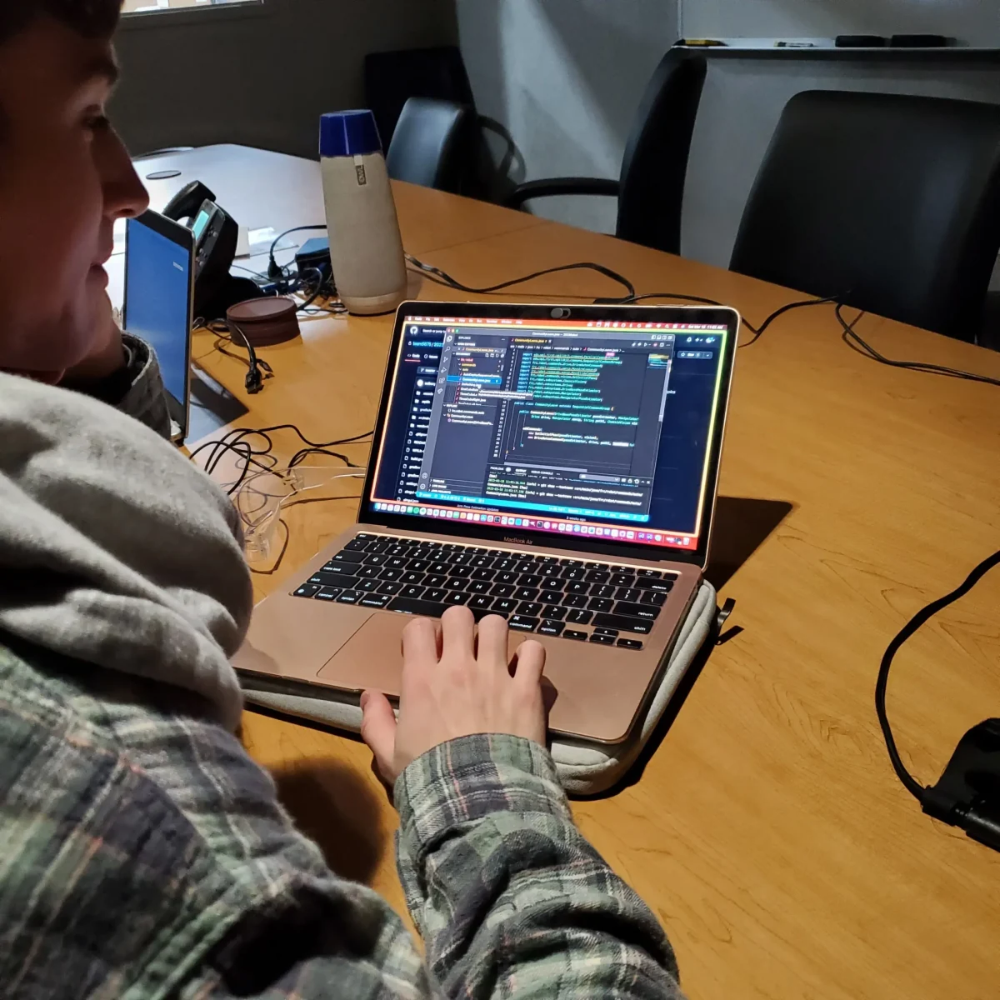

Programming with the WiredCats ↗Simulation Lab 7 · author and explainBuild your own small mechanism
Give a fictional roller a state, a sensor and a command that always has a way to finish.
What you already did
This lab builds on Labs 1–6, the enum toolbox page and the controller bridge, which are all earlier steps on the route. Keep the same stable-2026 project. This roller and its object-present checkbox are invented teaching tools, not a 2027 game mechanism. No motor or camera is connected.
1. Add two classes and their checks
Make a backup or Git checkpoint before your change. In the sim-starter download, open mechanism-lab/starter/src. Copy these new files to their matching locations under your project's src:
main/java/frc/robot/subsystems/TrainingRoller.javamain/java/frc/robot/commands/CaptureObject.javatest/java/frc/robot/MechanismTest.java
Do not overwrite a version you already edited; compare it in another tab. Files outside src are examples and do not compile automatically. The starter compiles, but its unfinished behavior should fail the mechanism checks.
2. Remember an intended action
TrainingRoller owns a Request enum: STOPPED, RUNNING and EJECTING. Its requested field remembers one choice. Complete request(next) so it stores next. A sensor is a different fact: hasObject asks the supplied BooleanSupplier for its current value. Changing a request does not prove that an object arrived.
The supplied appliedOutput converts a request to a fictional output and returns zero while disabled. Its periodic method logs request, applied output, sensor and result. The scheduler owns command conflicts; this small state enum is not a retained-priority request manager.
3. Write the command’s behavior
- In CaptureObject.initialize, ask the roller for RUNNING. The supplied timer restarts here for every execution.
- In isFinished, combine the current sensor value with the existing two-second limit using logical OR. Either condition can finish the action.
- Read end: it always stops the roller and timer. It records SENSOR for sensor completion, TIMEOUT when only the limit was reached, or INTERRUPTED for cancellation. If both completion conditions become true together, SENSOR wins.
Do not sleep or wait in a Java while loop. Returning quickly lets the scheduler run the rest of the robot. addRequirements(roller) gives this command exclusive use of the roller while it runs.
4. Connect your button
Add these lines once inside StudentProgram.configure, after the existing core-lab connections. The long class names make the snippet usable without adding imports; you may use imports after it works.
var roller = new frc.robot.subsystems.TrainingRoller(
() -> robot.input().objectPresent());
robot.driver.b().onTrue(new frc.robot.commands.CaptureObject(roller));Remove any temporary B-print binding from the controller bridge. onTrue starts one action on a press. Releasing B does not cancel it; it runs until its sensor, timeout or interruption ends it.
5. Observe three endings
- Start simulation, choose Teleop and clear Object present. Press B, then check Object present within two seconds. Read “Roller finished: SENSOR” in the Terminal.
- Clear the sensor and press B again. Leave it false: expect TIMEOUT after two seconds.
- Start another run and click Disabled before completion: expect INTERRUPTED. Re-enable without another press; nothing should restart.
- Try starting with the sensor already true. Then repeat the same command again to verify the timer resets.
Use your log workflow to graph Training/Roller/AppliedOutput and ObjectPresent; inspect Request and Result at the same time. The fictional output should end at zero in every case. v11 users load these custom topics before graphing.
6. Check your implementation
Disable and stop simulation before testing. Run only this lab’s native lifecycle checks:
.\robot test --tests "frc.robot.MechanismTest" --rerun-tasksThe checks exercise arriving and already-present sensors, timeout, interruption, disable and reuse. Compare with mechanism-lab/answer only after trying. A successful test supports these cases; it does not prove real sensor reliability.
Your turn · a second action
Write a separate short command that requests EJECTING for half a second, then stops. Give it the same roller requirement. Start it during CaptureObject and explain why the earlier command is interrupted. Log both outcomes. Keep your experiment in a separate saved folder or Git checkpoint.
The team’s health checks distinguish requests from actual readings, and hardware-dependent commands need time limits and cleanup. A retained request-priority manager is a later architecture topic; two ordinary commands requiring one subsystem interrupt each other. Compare the request-pattern reference only after you can explain this simpler ownership model.